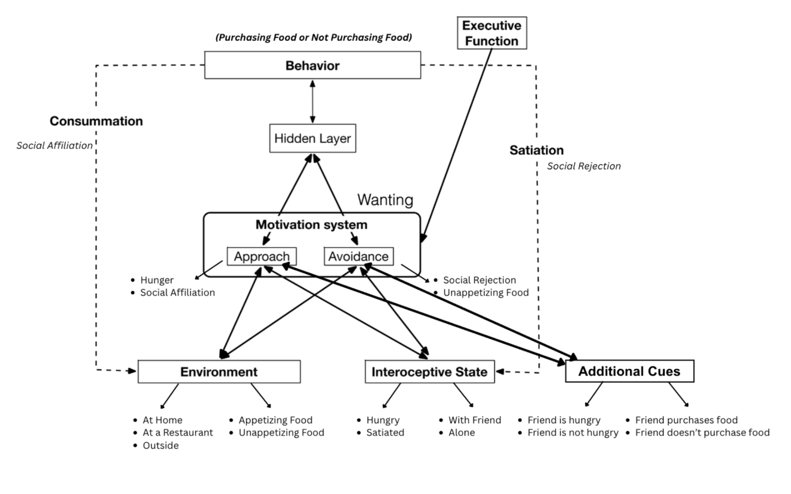
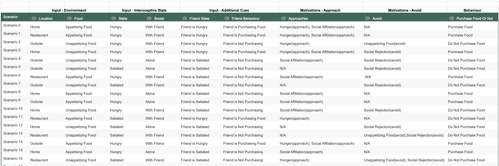
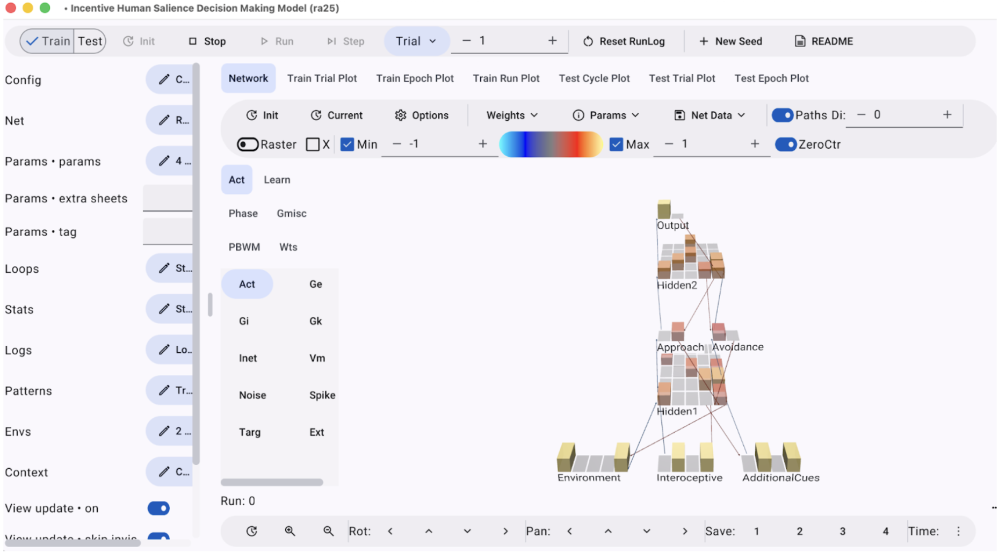

Fall 2025
Leabra, GO
This paper examines the Incentive Salience Model as a framework for understanding decision-making processes grounded in motivational states and desires. Numerous models of decision making have been proposed, ranging from parsimonious formulations to those incorporating multiple interacting variables. Building on this literature, the present study extends Read and Smith’s behavioral investigations of incentive-driven appetitive behavior to a human-centered context. Using a computational simulation, the study models the common decision of whether to purchase food, evaluating whether a neural network can learn to resolve motivational conflicts based on environmental and interoceptive cues. The model is implemented within the Emergent/Leabra framework to assess its capacity to learn and predict human food-purchasing behavior.


Training data consist of 25 distinct scenarios representing varied environmental conditions, allowing for an examination of the feasibility of incentive salience–based decision making in human-relevant contexts.

The network diagram illustrates how everyday human decision in particular, purchasing food, is complex through a neural network model where the numerous cues and layer represent various human factors involved such as: human physiological needs, namely, hunger and social affiliation.